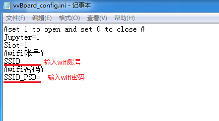
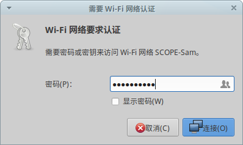
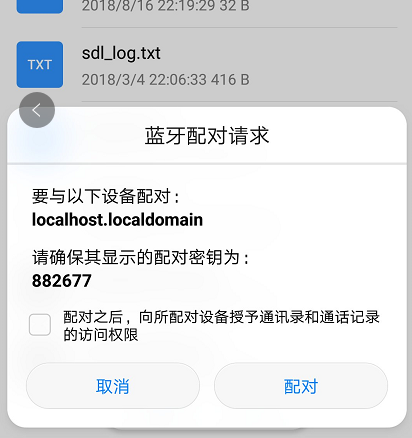
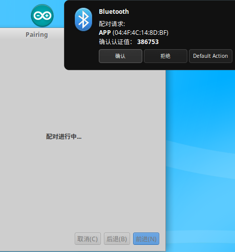
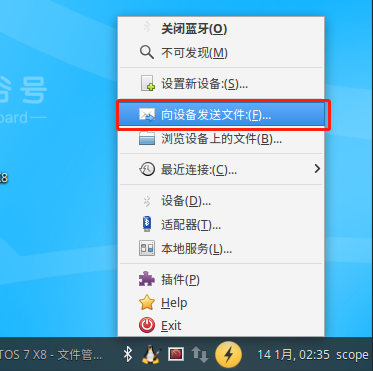
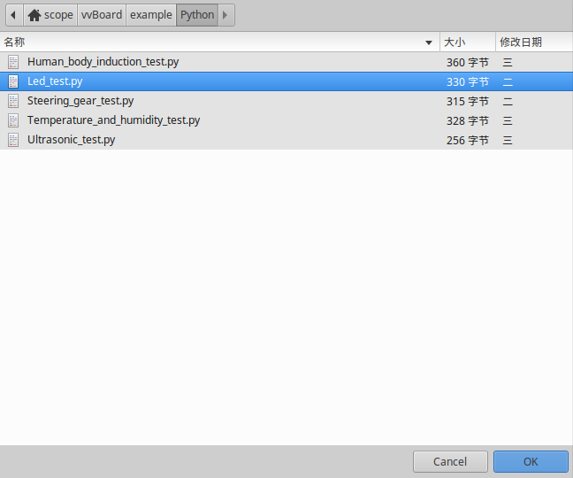
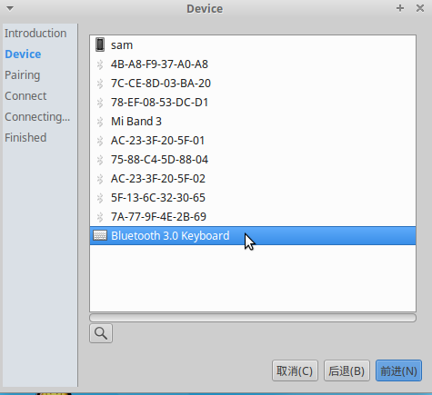
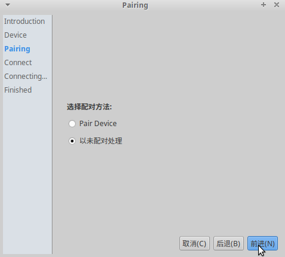
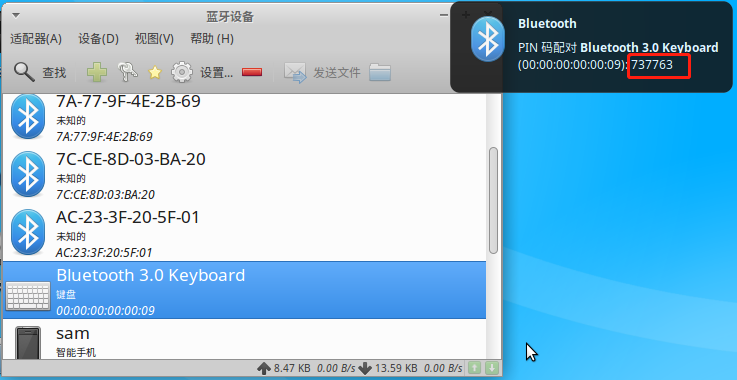

1. Wi-Fi和蓝牙¶
虚谷号板载了Wi-Fi和蓝牙模块。
1.1. Wi-Fi使用¶
1.通过U盘模式连接Wi-Fi
更改U盘vvboard文件夹的”vvBoard_config.ini”中，SSID和SSID_PSD。短按RST键重启U盘服务，在U盘vvboard文件夹的“wifi_log.txt”中，可以找到IP地址。
配置好Wi-Fi信息后，每一次开机，虚谷号都会自动连接。
2.在主机模式连接Wi-Fi
点击右下角连接图标

找到需要的连接的Wi-Fi，并点击，点击后将会出现下图的界面，在输入框中输入正确的密码后，点击连接按钮。
注：如果账号需要二次认证身份（如校园网等），还需要输入其他认证信息，和window操作类似。
连接成功后，桌面右下角会出现Wi-Fi信号图标，右上角会提示连接已建立。

注：目前虚谷号仅支持2.4GHz的Wi-Fi。如果Wi-Fi需要二次身份认证（如校园网等），只能通过主机模式连接，不能用U盘模式配置。在修改完vvBoard_config文件后，如果短按RST键后没有连接成功，可以多尝试几次。
2.蓝牙的使用¶
1.连接手机
1）打开蓝牙设备
将手机上的蓝牙功能打开
2）连接蓝牙
将虚谷号与手机蓝牙进行连接，连接方法如下：
点击屏幕左下角蓝牙图标，点击设置新设备


选择需要连接的蓝牙，点击前进

选择配对方法，点击前进

手机进行配对确认
虚谷号进行配对确认
2.发送文件
1）虚谷号向手机发送文件
点击屏幕左下角蓝牙图标，点击向设备发送文件
选择要发送的文件点击OK
选择设备点击OK


在手机上接收文件

2）手机向虚谷号发送文件
在手机上选择一个文件，通过蓝牙分享给虚谷号，然后在虚谷号上接收文件，如下图：

3.虚谷号连接蓝牙键盘
将蓝牙键盘的开关拨至ON处，按下Connect按钮

点击屏幕右下角的蓝牙按钮，点击添加新设备


选择需要连接的蓝牙，点击前进
选择以未配对处理，点击前进
点击前进

点击Stop（暂时没有PIN码是正常的，请不要担心，继续往下操作）


点击设备

选择蓝牙键盘，单击鼠标右键选择配对

在键盘上输入红框内的密码，点击回车
连接成功后会出现一把钥匙，如下图：